Sensitivities across events, checked symbolically
Source:vignettes/articles/saltation.Rmd
saltation.RmdFirst- and second-order sensitivities of cppODE() across
events, switches and sliding, forward and forward over reverse, against
symbolic solutions from SymPy. A parameter-dependent event time adds a
saltation term (Events, switches and
saltation); an error in it shows as an offset from the symbolic
curve. Figures: solid line symbolic, forward result on top, circles
forward over reverse at each seeded output time. Printed lines give the
largest difference per derivative order. Results are read from
saltation/*.rds, computed if absent.
Symbolic solutions
One dsolve() per smooth segment, pinned to the state at
the segment start and glued to the next segment at the firing time.
sym <- function(name, ...) sp$Symbol(name, real = TRUE, ...)
tSym <- sym("t")
# Integer exponents only. A float power blocks the simplifications that
# turn the solution of an oscillator back into a sine.
pow <- function(base, exponent) sp$Pow(base, as.integer(exponent))
# One smooth segment of a first order equation, pinned by y(t0) = y0.
segment <- function(fun, rhs, t0, y0)
sp$dsolve(sp$Eq(sp$Derivative(fun(tSym), tSym), rhs), fun(tSym),
ics = reticulate::py_dict(list(fun(t0)), list(y0)))$rhs
# The same for a second order equation, pinned by y(t0) and y'(t0).
segment2 <- function(fun, rhs, t0, y0, dy0)
sp$dsolve(sp$Eq(sp$Derivative(fun(tSym), tSym, 2L), rhs), fun(tSym),
ics = reticulate::py_dict(
list(fun(t0), sp$Derivative(fun(tSym), tSym)$subs(tSym, t0)),
list(y0, dy0)))$rhs
# Segments glued at their firing times, one branch longer than fires.
composed <- function(branches, fires) {
pieces <- Map(function(branch, fire) reticulate::tuple(branch, sp$Lt(tSym, fire)),
branches[seq_along(fires)], fires)
do.call(sp$Piecewise,
c(pieces, list(reticulate::tuple(branches[[length(branches)]], sp$`true`))))
}
# A parameter point: the symbols, their values, and the grid to compare on.
# The names are the ones solveODE() labels the sensitivity slices with, where
# a state name stands for that state's initial value.
point <- function(syms, pars, times)
list(syms = syms, names = names(pars), values = as.list(unname(pars)),
times = times)
toNumeric <- function(expr)
suppressWarnings(as.numeric(reticulate::py_str(sp$N(expr))))
# Every parameter replaced by the value at the point, time left free.
atPoint <- function(expr, at) expr$subs(reticulate::py_dict(at$syms, at$values))
# SymPy's lambdify reads the frame of the caller for a docstring and a call from R
# has none, so it goes through a Python function. Compiling once per expression
# turns one round trip per time point into one per panel.
sympyGrid <- reticulate::py_run_string(
"import sympy
def over_grid(sym, expr, grid):
f = sympy.lambdify(sym, expr, 'math')
return [f(v) for v in grid]
")
# The expression, or a derivative of it, over the whole time grid. A constant
# expression still yields one value per time point.
series <- function(expr, at, wrt = list()) {
for (s in wrt) expr <- sp$diff(expr, s)
as.numeric(sympyGrid$over_grid(tSym, atPoint(expr, at), at$times))
}
# Numeric value of an expression that no longer depends on time.
value <- function(expr, at) toNumeric(atPoint(expr, at))
# The first zero after `after`, over one condition or several at once, picked
# numerically among the symbolic roots. Complex branches drop out as NA.
crossing <- function(conditions, at, after = 0) {
if (!is.list(conditions)) conditions <- list(conditions)
roots <- unlist(lapply(conditions,
function(g) sp$solve(sp$Eq(g, sp$Integer(0L)), tSym)),
recursive = FALSE)
when <- vapply(roots, value, 0, at = at)
roots[[which.min(ifelse(!is.na(when) & when > after + 1e-9, when, Inf))]]
}Comparison functions
comparison() pairs symbolic and forward derivatives,
reverseSeries() adds forward over reverse,
report() prints the largest differences per order,
comparisonPlot() draws them.
# Panel labels use the partial derivative sign, U+2202.
lab1 <- function(var, a) sprintf("\u2202%s / \u2202%s", var, a)
lab2 <- function(var, a, b) {
if (a == b) return(sprintf("\u2202\u00b2%s / \u2202%s\u00b2", var, a))
sprintf("\u2202\u00b2%s / \u2202%s\u2202%s", var, a, b)
}
# The last row at a requested time holds the post-event state, whether
# or not a localized root inserted extra rows.
rowsAt <- function(res, times)
vapply(times, function(s) max(which(abs(res$time - s) < 1e-9)), 1L)
# One panel per quantity: the state, the gradient, and each distinct
# second derivative, symbolic against what solveODE() returned.
comparison <- function(expr, at, res, var) {
i <- rowsAt(res, at$times)
np <- length(at$syms)
# One entry per panel, each holding both curves over the whole grid.
panel <- function(order, quantity, symbolic, numeric)
list(order = order, quantity = quantity,
symbolic = symbolic, numeric = as.numeric(numeric))
panels <- list(panel(0L, var, series(expr, at), res$variable[i, var]))
for (a in seq_len(np))
panels[[length(panels) + 1L]] <-
panel(1L, lab1(var, at$names[a]), series(expr, at, at$syms[a]),
res$tangent[i, var, at$names[a]])
for (a in seq_len(np)) for (b in a:np)
panels[[length(panels) + 1L]] <-
panel(2L, lab2(var, at$names[a], at$names[b]),
series(expr, at, at$syms[c(a, b)]),
res$hessian[i, var, at$names[a], at$names[b]])
labels <- vapply(panels, `[[`, "", "quantity")
data.frame(
order = rep(vapply(panels, `[[`, 0L, "order"), each = length(at$times)),
quantity = factor(rep(labels, each = length(at$times)), levels = labels),
time = rep(at$times, length(panels)),
symbolic = unlist(lapply(panels, `[[`, "symbolic"), use.names = FALSE),
numeric = unlist(lapply(panels, `[[`, "numeric"), use.names = FALSE))
}
# The numeric side of the figures, one line per derivative order.
report <- function(df, title) {
cat("\n", title, "\n", sep = "")
for (o in sort(unique(df$order))) {
d <- df[df$order == o, ]
cat(sprintf(" %-13s max |solveODE - symbolic| = %.2e\n",
c("state", "first order", "second order")[o + 1L],
max(abs(d$numeric - d$symbolic))))
}
}
# Forward over reverse at every `every`-th output time: a cotangent seeded on
# one row and state makes the gradient that state's row of the tangent and the
# curvature the Hessian of that state. Only requested times are seeded, since a row a root
# inserts moves with the parameters.
reverseSeries <- function(expr, at, res, model, pars, var, states,
opts = list(), every = 50L) {
keep <- seq(1L, length(at$times), by = every)
i <- rowsAt(res, at$times)[keep]
W <- array(0, c(nrow(res$variable), length(states), length(keep)))
for (r in seq_along(keep)) W[i[r], match(var, states), r] <- 1
rev <- do.call(solveODE, c(list(model, at$times, pars, cotangent = W), opts))
np <- length(at$syms)
out <- list()
add <- function(order, quantity, symbolic, numeric)
out[[length(out) + 1L]] <<- data.frame(
order = order, quantity = quantity, time = at$times[keep],
symbolic = symbolic, reverse = as.numeric(numeric))
for (a in seq_len(np))
add(1L, lab1(var, at$names[a]),
series(expr, at, at$syms[a])[keep], rev$cotangent[at$names[a], ])
for (a in seq_len(np)) for (b in a:np)
add(2L, lab2(var, at$names[a], at$names[b]),
series(expr, at, at$syms[c(a, b)])[keep],
rev$curvature[at$names[a], at$names[b], ])
df <- do.call(rbind, out)
for (o in 1:2) {
d <- df[df$order == o, ]
cat(sprintf(" %-13s max |reverse - symbolic| = %.2e\n",
c("reverse 1st", "reverse 2nd")[o],
max(abs(d$reverse - d$symbolic))))
}
df
}
# `rev` draws forward over reverse on top, one point per seeded row.
comparisonPlot <- function(df, orders, title, rev = NULL) {
p <- ggplot(df[df$order %in% orders, ], aes(x = time)) +
# A quantity that vanishes identically leaves the solver a cancellation
# residue of a few ulp, and a free y scale would blow that up into a
# picture of the round-off. No panel is drawn tighter than this.
expand_limits(y = c(-1e-10, 1e-10)) +
geom_line(aes(y = symbolic, color = "symbolic", linetype = "symbolic"),
linewidth = 1) +
geom_line(aes(y = numeric, color = "forward", linetype = "forward"),
linewidth = 1)
if (!is.null(rev)) {
rev$quantity <- factor(rev$quantity, levels = levels(df$quantity))
p <- p + geom_point(data = rev[rev$order %in% orders, ],
aes(y = reverse, color = "reverse"),
shape = 21, fill = NA)
}
p + facet_wrap(~quantity, scales = "free_y", ncol = 5) +
scale_x_continuous(n.breaks = 3) +
scale_color_manual(values = c(symbolic = "#000000", forward = "#E69F00", reverse = "#0072B2"),
breaks = c("symbolic", "forward", "reverse")) +
scale_linetype_manual(values = c(symbolic = "solid", forward = "dotdash"), guide = "none") +
guides(color = guide_legend(override.aes = list(linetype = c("solid", "dotdash", "blank"),
shape = c(NA, NA, 21)))) +
labs(title = title, x = "time", y = NULL, color = NULL) +
theme(legend.position = "top")
}Root event on a coupled pair
The firing time depends on three parameters, and the crossing lands on an output time.
events_pair <- data.frame(var = "C", time = NA, value = "d", method = "add",
root = "S - c", stringsAsFactors = FALSE)
model_pair <- cppODE(c(S = "a", C = "-b * C"), events = events_pair,
deriv = TRUE, deriv2 = TRUE, modelname = "saltation_pair")
pars_pair <- c(S = 2, C = 4, a = 1, b = 0.1, c = 14, d = 3)
times_pair <- seq(0, 20, len = 1000)
# Tight tolerances throughout, so what is left of the residual is the solver
# and not the saltation transport. roottol matters as much: the firing time
# enters the state through the velocity, so a loose root is a state error.
res_pair <- solveODE(model_pair, times_pair, pars_pair,
abstol = 1e-12, reltol = 1e-12, roottol = 1e-12)
S0 <- sym("S0"); C0 <- sym("C0"); a <- sym("a")
b <- sym("b"); cc <- sym("c"); d <- sym("d")
Sfun <- sp$Function("S"); Cfun <- sp$Function("C")
point_pair <- point(list(S0, C0, a, b, cc, d),
pars_pair[c("S", "C", "a", "b", "c", "d")], times_pair)
S_of_t <- segment(Sfun, a, sp$Integer(0L), S0)
fire_pair <- crossing(S_of_t - cc, point_pair)
C_before <- segment(Cfun, -b * Cfun(tSym), sp$Integer(0L), C0)
C_after <- segment(Cfun, -b * Cfun(tSym), fire_pair,
C_before$subs(tSym, fire_pair) + d)
C_of_t <- composed(list(C_before, C_after), list(fire_pair))
cmp_pair <- comparison(C_of_t, point_pair, res_pair, "C")
model_pair_r <- cppODE(c(S = "a", C = "-b * C"), events = events_pair,
derivMode = "forward-reverse", modelname = "saltation_pair_r")
rev_pair <- reverseSeries(C_of_t, point_pair, res_pair, model_pair_r, pars_pair,
"C", c("S", "C"),
opts = list(abstol = 1e-12, reltol = 1e-12,
roottol = 1e-12))#> Warning: saltation/pair.rds was computed from other code or another cppDE
#> version; delete it to compute it again
report(cmp_pair, "root event on a coupled pair")
#>
#> root event on a coupled pair
#> state max |solveODE - symbolic| = 2.24e-11
#> first order max |solveODE - symbolic| = 1.01e-09
#> second order max |solveODE - symbolic| = 3.64e-08
plot_pair_1 <- comparisonPlot(cmp_pair, 0:1, "C and gradient across a root event",
rev_pair)
plot_pair_1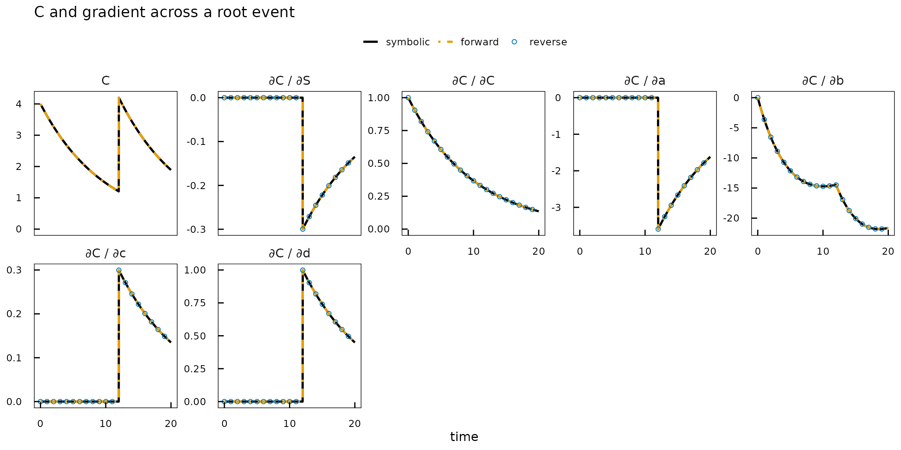
plot_pair_2 <- comparisonPlot(cmp_pair, 2L, "Second derivatives of C across a root event",
rev_pair)
plot_pair_2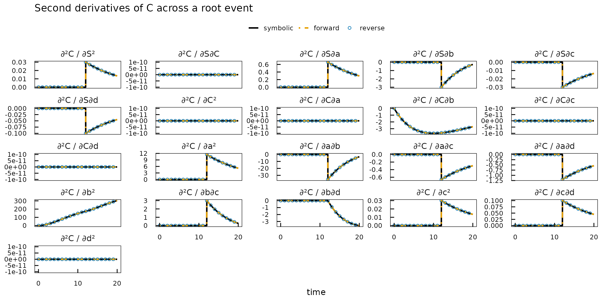
Time-triggered event
\(\partial t^*/\partial\theta\) comes from the event-time expression, not from a root.
events_dose <- data.frame(var = "x", time = "te", value = "v", method = "add",
root = NA, stringsAsFactors = FALSE)
model_dose <- cppODE(c(x = "-k * x"), events = events_dose, deriv = TRUE,
deriv2 = TRUE, modelname = "saltation_dose")
pars_dose <- c(x = 1, k = 0.3, v = 2, te = 4)
times_dose <- seq(0, 10, len = 1000)
res_dose <- solveODE(model_dose, times_dose, pars_dose,
abstol = 1e-12, reltol = 1e-12)
x0 <- sym("x0"); k <- sym("k"); dose <- sym("v"); te <- sym("te")
xfun <- sp$Function("x")
point_dose <- point(list(x0, k, dose, te),
pars_dose[c("x", "k", "v", "te")], times_dose)
x_before <- segment(xfun, -k * xfun(tSym), sp$Integer(0L), x0)
x_after <- segment(xfun, -k * xfun(tSym), te, x_before$subs(tSym, te) + dose)
x_dose <- composed(list(x_before, x_after), list(te))
cmp_dose <- comparison(x_dose, point_dose, res_dose, "x")
model_dose_r <- cppODE(c(x = "-k * x"), events = events_dose,
derivMode = "forward-reverse", modelname = "saltation_dose_r")
rev_dose <- reverseSeries(x_dose, point_dose, res_dose, model_dose_r, pars_dose,
"x", "x", opts = list(abstol = 1e-12, reltol = 1e-12))#> Warning: saltation/dose.rds was computed from other code or another cppDE
#> version; delete it to compute it again
report(cmp_dose, "time-triggered event")
#>
#> time-triggered event
#> state max |solveODE - symbolic| = 4.59e-12
#> first order max |solveODE - symbolic| = 6.82e-11
#> second order max |solveODE - symbolic| = 7.96e-10
plot_dose_1 <- comparisonPlot(cmp_dose, 0:1, "x and gradient across a timed dose",
rev_dose)
plot_dose_1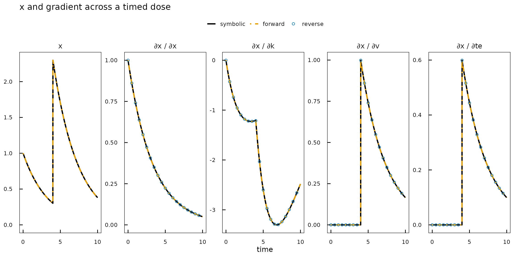
plot_dose_2 <- comparisonPlot(cmp_dose, 2L, "Second derivatives of x across a timed dose",
rev_dose)
plot_dose_2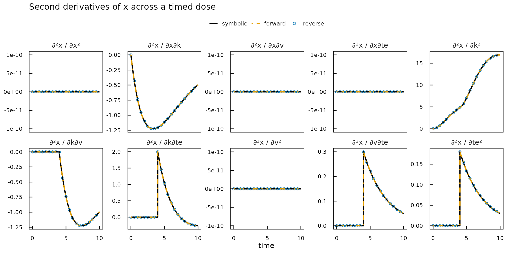
Repeated root event
Three firings, each depending on the one before; the saltation terms compose.
events_pulse <- data.frame(var = "x", time = NA, value = "v", method = "add",
root = "x - xc", stringsAsFactors = FALSE)
model_pulse <- cppODE(c(x = "-k * x"), events = events_pulse, deriv = TRUE,
deriv2 = TRUE, modelname = "saltation_pulse")
model_pulse_r <- cppODE(c(x = "-k * x"), events = events_pulse,
derivMode = "forward-reverse",
modelname = "saltation_pulse_r")
pars_pulse <- c(x = 1, k = 0.3, v = 1, xc = 0.4)
times_pulse <- seq(0, 12, len = 1000)
res_pulse <- solveODE(model_pulse, times_pulse, pars_pulse, maxroot = 3L,
abstol = 1e-12, reltol = 1e-12, roottol = 1e-12)
xc <- sym("xc")
point_pulse <- point(list(x0, k, dose, xc),
pars_pulse[c("x", "k", "v", "xc")], times_pulse)
branches_pulse <- list(segment(xfun, -k * xfun(tSym), sp$Integer(0L), x0))
fires_pulse <- list()
for (j in 1:3) {
previous <- if (j == 1) 0 else value(fires_pulse[[j - 1]], point_pulse)
fires_pulse[[j]] <- crossing(branches_pulse[[j]] - xc, point_pulse, previous)
branches_pulse[[j + 1]] <- segment(xfun, -k * xfun(tSym), fires_pulse[[j]],
xc + dose)
}
x_pulse <- composed(branches_pulse, fires_pulse)
cmp_pulse <- comparison(x_pulse, point_pulse, res_pulse, "x")
rev_pulse <- reverseSeries(x_pulse, point_pulse, res_pulse, model_pulse_r,
pars_pulse, "x", "x",
opts = list(maxroot = 3L, abstol = 1e-12,
reltol = 1e-12, roottol = 1e-12))#> Warning: saltation/pulse.rds was computed from other code or another cppDE
#> version; delete it to compute it again
report(cmp_pulse, "a root event that fires three times")
#>
#> a root event that fires three times
#> state max |solveODE - symbolic| = 6.75e-11
#> first order max |solveODE - symbolic| = 4.74e-10
#> second order max |solveODE - symbolic| = 3.10e-09
plot_pulse_1 <- comparisonPlot(cmp_pulse, 0:1, "x and gradient over three firings",
rev_pulse)
plot_pulse_1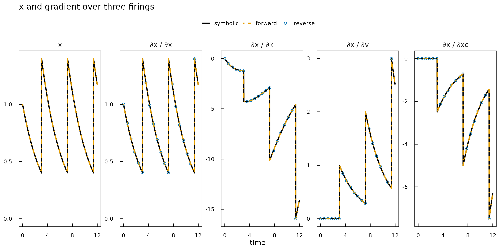
plot_pulse_2 <- comparisonPlot(cmp_pulse, 2L, "Second derivatives of x over three firings",
rev_pulse)
plot_pulse_2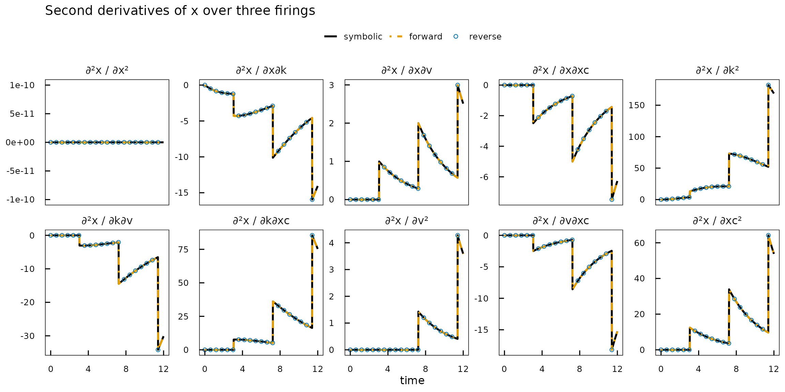
Time-dependent right-hand side
The second-order transport needs the time argument of the Heun shifts, not only the state.
events_drift <- data.frame(var = "x", time = NA, value = "v", method = "add",
root = "x - xc", stringsAsFactors = FALSE)
model_drift <- cppODE(c(x = "-k * time * x"), events = events_drift,
deriv = TRUE, deriv2 = TRUE, modelname = "saltation_drift")
model_drift_r <- cppODE(c(x = "-k * time * x"), events = events_drift,
derivMode = "forward-reverse",
modelname = "saltation_drift_r")
pars_drift <- c(x = 1, k = 0.2, v = 0.5, xc = 0.3)
times_drift <- seq(0, 6, len = 1000)
res_drift <- solveODE(model_drift, times_drift, pars_drift,
abstol = 1e-12, reltol = 1e-12, roottol = 1e-12)
point_drift <- point(list(x0, k, dose, xc),
pars_drift[c("x", "k", "v", "xc")], times_drift)
drift_before <- segment(xfun, -k * tSym * xfun(tSym), sp$Integer(0L), x0)
fire_drift <- crossing(drift_before - xc, point_drift)
drift_after <- segment(xfun, -k * tSym * xfun(tSym), fire_drift, xc + dose)
x_drift <- composed(list(drift_before, drift_after), list(fire_drift))
cmp_drift <- comparison(x_drift, point_drift, res_drift, "x")
rev_drift <- reverseSeries(x_drift, point_drift, res_drift, model_drift_r,
pars_drift, "x", "x",
opts = list(abstol = 1e-12, reltol = 1e-12,
roottol = 1e-12))#> Warning: saltation/drift.rds was computed from other code or another cppDE
#> version; delete it to compute it again
report(cmp_drift, "explicit time dependence in the right-hand side")
#>
#> explicit time dependence in the right-hand side
#> state max |solveODE - symbolic| = 1.15e-11
#> first order max |solveODE - symbolic| = 2.47e-10
#> second order max |solveODE - symbolic| = 3.89e-09
plot_drift_1 <- comparisonPlot(cmp_drift, 0:1, "x and gradient, time-dependent decay",
rev_drift)
plot_drift_1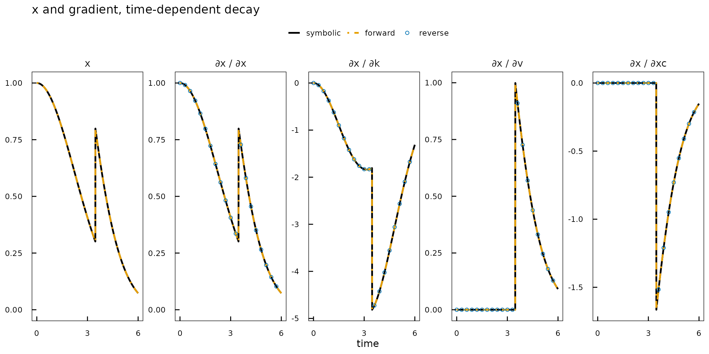
plot_drift_2 <- comparisonPlot(cmp_drift, 2L, "Second derivatives of x, time-dependent decay",
rev_drift)
plot_drift_2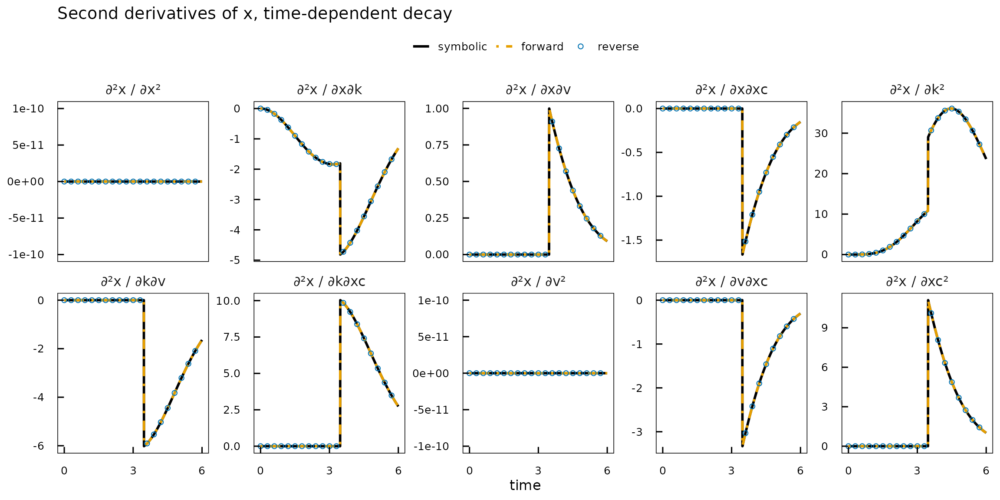
Oscillator between elastic walls
Two root events reverse the velocity and fire alternately. The position is continuous, so the events act on the sensitivities through saltation only. The root of the wall just left, zero at the restart, is not counted as a crossing.
events_wall <- data.frame(var = c("v", "v"), time = c(NA, NA),
value = c("-1", "-1"),
method = c("multiply", "multiply"),
root = c("x - L", "x + L"), stringsAsFactors = FALSE)
model_wall <- cppODE(c(x = "v", v = "-w^2 * x"), events = events_wall,
deriv = TRUE, deriv2 = TRUE, modelname = "saltation_wall")
model_wall_r <- cppODE(c(x = "v", v = "-w^2 * x"), events = events_wall,
derivMode = "forward-reverse",
modelname = "saltation_wall_r")
pars_wall <- c(x = 0.2, v = 1.2, w = 1, L = 0.8)
times_wall <- seq(0, 11, len = 1000)
# Two firings per wall, so 8 bounces before the grid ends.
res_wall <- solveODE(model_wall, times_wall, pars_wall, maxroot = 4L,
abstol = 1e-12, reltol = 1e-12, roottol = 1e-12)
x_ini <- sym("x0"); v_ini <- sym("v0")
freq <- sp$Symbol("w", real = TRUE, positive = TRUE)
wall <- sp$Symbol("L", real = TRUE, positive = TRUE)
point_wall <- point(list(x_ini, v_ini, freq, wall),
pars_wall[c("x", "v", "w", "L")], times_wall)
oscillation <- function(t0, y0, dy0)
segment2(xfun, -pow(freq, 2) * xfun(tSym), t0, y0, dy0)
# From the initial state to whichever wall comes first.
approach <- oscillation(sp$Integer(0L), x_ini, v_ini)
first_hit <- crossing(list(approach - wall, approach + wall), point_wall)
first_side <- sign(value(approach$subs(tSym, first_hit), point_wall))
# The energy survives the reflection, so every flight between the walls is one
# arc up to a sign and a time shift. Solved once it stays small, while composing
# it bounce by bounce through dsolve() nests one inverse tangent per wall.
energy <- sp$simplify(pow(sp$diff(approach, tSym), 2) + pow(freq, 2) * pow(approach, 2))
speed <- sp$sqrt(energy - pow(freq, 2) * pow(wall, 2))
stopifnot(isTRUE(all.equal(
value(speed, point_wall),
first_side * value(sp$diff(approach, tSym)$subs(tSym, first_hit), point_wall))))
# One arc, from the wall it leaves to the opposite one, in the time since
# that bounce.
flight_arc <- oscillation(sp$Integer(0L), wall, -speed)
flight_time <- crossing(flight_arc + wall, point_wall)
branches_wall <- list(approach)
fires_wall <- list(first_hit)
side <- first_side
for (j in 1:8) {
branches_wall[[j + 1]] <- sp$Integer(as.integer(side)) *
flight_arc$subs(tSym, tSym - fires_wall[[j]])
if (j < 8) fires_wall[[j + 1]] <- fires_wall[[j]] + flight_time
side <- -side
}
x_wall <- composed(branches_wall, fires_wall)
v_wall <- sp$diff(x_wall, tSym)
cmp_wall_x <- comparison(x_wall, point_wall, res_wall, "x")
cmp_wall_v <- comparison(v_wall, point_wall, res_wall, "v")
rev_wall_x <- reverseSeries(x_wall, point_wall, res_wall, model_wall_r,
pars_wall, "x", c("x", "v"),
opts = list(maxroot = 4L, abstol = 1e-12,
reltol = 1e-12, roottol = 1e-12))
rev_wall_v <- reverseSeries(v_wall, point_wall, res_wall, model_wall_r,
pars_wall, "v", c("x", "v"),
opts = list(maxroot = 4L, abstol = 1e-12,
reltol = 1e-12, roottol = 1e-12))#> Warning: saltation/wall.rds was computed from other code or another cppDE
#> version; delete it to compute it again
report(cmp_wall_x, "oscillator between elastic walls, position")
#>
#> oscillator between elastic walls, position
#> state max |solveODE - symbolic| = 3.92e-10
#> first order max |solveODE - symbolic| = 5.17e-09
#> second order max |solveODE - symbolic| = 1.31e-07
report(cmp_wall_v, "oscillator between elastic walls, velocity")
#>
#> oscillator between elastic walls, velocity
#> state max |solveODE - symbolic| = 3.40e-10
#> first order max |solveODE - symbolic| = 7.17e-09
#> second order max |solveODE - symbolic| = 7.03e-08
plot_wall_1 <- comparisonPlot(cmp_wall_x, 0:1, "Position and gradient over 8 bounces",
rev_wall_x)
plot_wall_1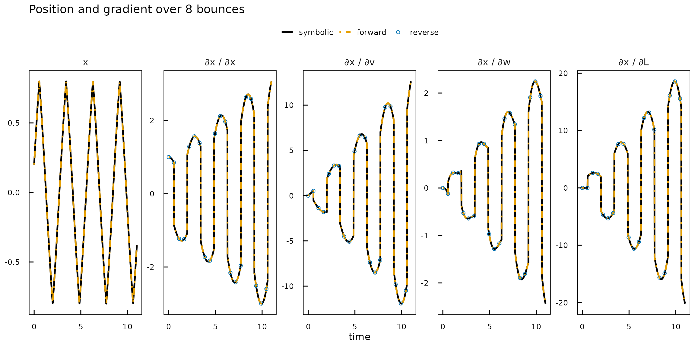
plot_wall_2 <- comparisonPlot(cmp_wall_x, 2L, "Second derivatives of the position",
rev_wall_x)
plot_wall_2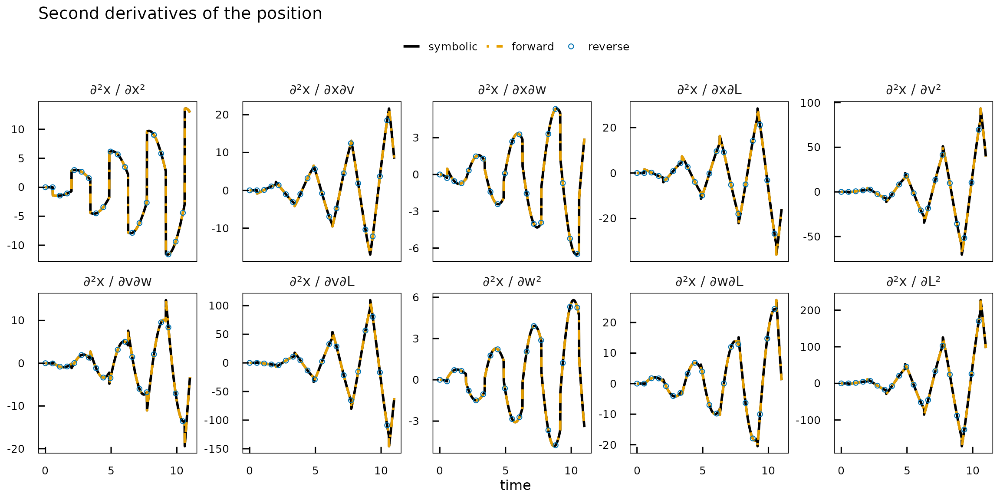
plot_wall_3 <- comparisonPlot(cmp_wall_v, 0:1, "Velocity and gradient over 8 bounces",
rev_wall_v)
plot_wall_3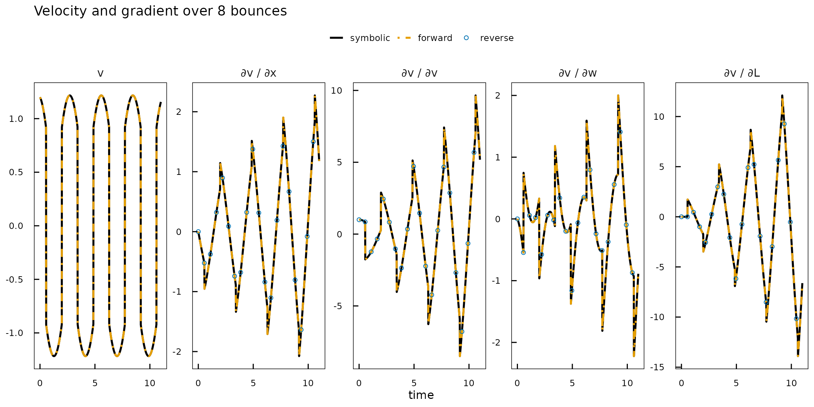
plot_wall_4 <- comparisonPlot(cmp_wall_v, 2L, "Second derivatives of the velocity",
rev_wall_v)
plot_wall_4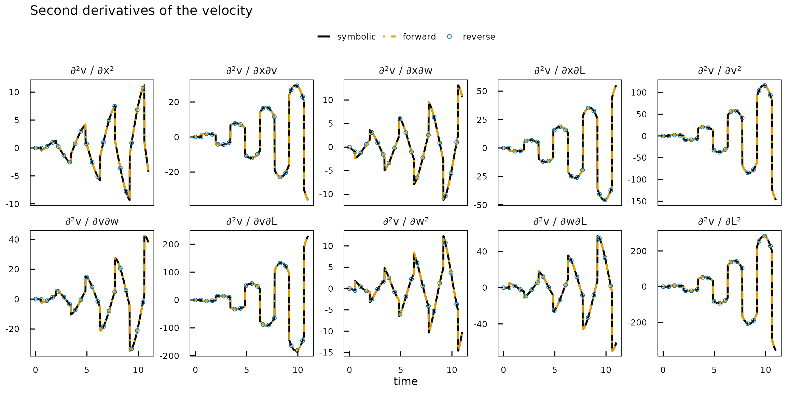
Event time and height as expressions
The firing time is nonlinear in a parameter and the height depends on time and state, so no term of the transport vanishes.
events_expr <- data.frame(var = "x", time = "0.5*te + 0.4*te*te",
value = "v * time + q * x", method = "add",
root = NA, stringsAsFactors = FALSE)
model_expr <- cppODE(c(x = "-k * x"), events = events_expr, deriv = TRUE,
deriv2 = TRUE, modelname = "saltation_expr")
model_expr_r <- cppODE(c(x = "-k * x"), events = events_expr,
derivMode = "forward-reverse", modelname = "saltation_expr_r")
pars_expr <- c(x = 1, k = 0.3, v = 0.5, q = 0.4, te = 1.6)
times_expr <- seq(0, 10, len = 1000)
res_expr <- solveODE(model_expr, times_expr, pars_expr,
abstol = 1e-12, reltol = 1e-12)
vv <- sym("v"); qq <- sym("q"); tev <- sym("te")
point_expr <- point(list(x0, k, vv, qq, tev),
pars_expr[c("x", "k", "v", "q", "te")], times_expr)
fire_expr <- sp$Rational(1L, 2L) * tev + sp$Rational(2L, 5L) * pow(tev, 2)
expr_before <- segment(xfun, -k * xfun(tSym), sp$Integer(0L), x0)
at_fire <- expr_before$subs(tSym, fire_expr)
expr_after <- segment(xfun, -k * xfun(tSym), fire_expr,
at_fire + vv * fire_expr + qq * at_fire)
x_expr <- composed(list(expr_before, expr_after), list(fire_expr))
cmp_expr <- comparison(x_expr, point_expr, res_expr, "x")
rev_expr <- reverseSeries(x_expr, point_expr, res_expr, model_expr_r, pars_expr,
"x", "x", opts = list(abstol = 1e-12, reltol = 1e-12))#> Warning: saltation/expr.rds was computed from other code or another cppDE
#> version; delete it to compute it again
report(cmp_expr, "a jump whose time and height are expressions")
#>
#> a jump whose time and height are expressions
#> state max |solveODE - symbolic| = 5.34e-12
#> first order max |solveODE - symbolic| = 7.41e-11
#> second order max |solveODE - symbolic| = 8.59e-10
plot_expr_1 <- comparisonPlot(cmp_expr, 0:1, "x and gradient, expression-valued jump",
rev_expr)
plot_expr_1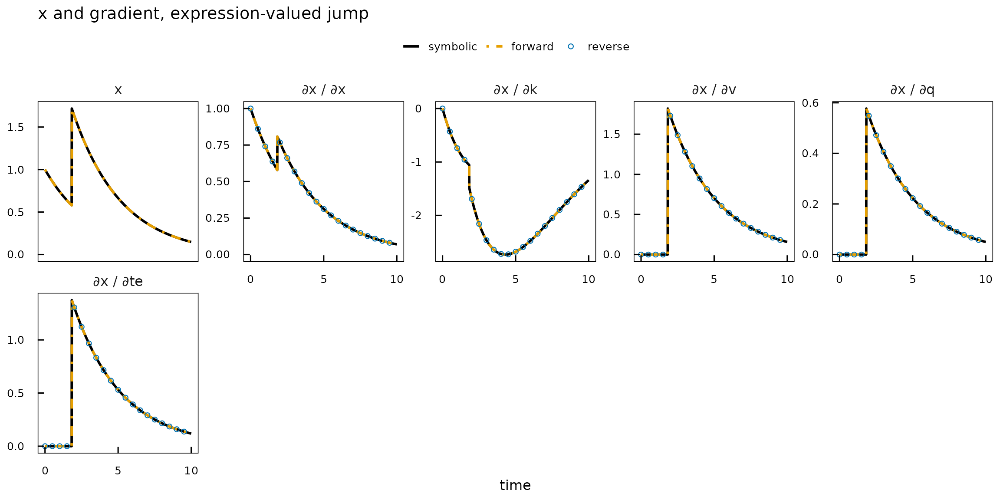
plot_expr_2 <- comparisonPlot(cmp_expr, 2L, "Second derivatives, expression-valued jump",
rev_expr)
plot_expr_2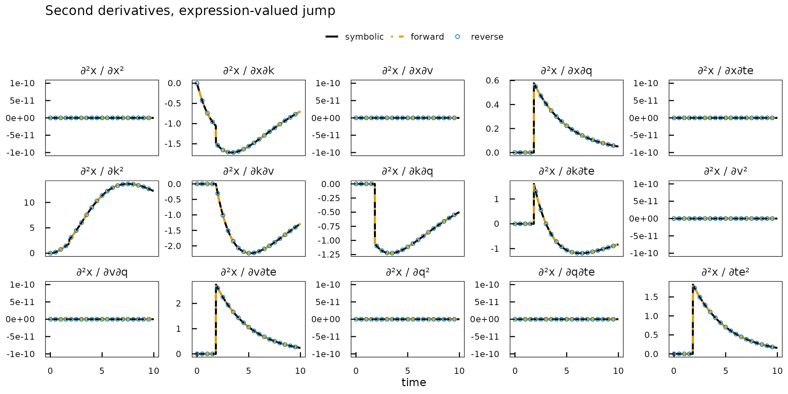
Nonlinear time-dependent root
The derivative of the firing time in the state holds \(\nabla \dot g = \nabla g_t + (\nabla^2 g)\, f + J^\mathsf{T} \nabla g\), here with no zero term. The root is quadratic in \(t\), so the crossing has a closed form.
events_quad <- data.frame(var = "x", time = NA, value = "v * time",
method = "add", root = "x*x - xc - b*time",
stringsAsFactors = FALSE)
model_quad <- cppODE(c(x = "r"), events = events_quad, deriv = TRUE,
deriv2 = TRUE, modelname = "saltation_quad")
model_quad_r <- cppODE(c(x = "r"), events = events_quad,
derivMode = "forward-reverse", modelname = "saltation_quad_r")
pars_quad <- c(x = 0.5, r = 0.8, v = 0.3, xc = 1.2, b = 0.25)
times_quad <- seq(0, 4, len = 1000)
res_quad <- solveODE(model_quad, times_quad, pars_quad,
abstol = 1e-12, reltol = 1e-12, roottol = 1e-12)
rr <- sym("r"); bb <- sym("b")
point_quad <- point(list(x0, rr, vv, xc, bb),
pars_quad[c("x", "r", "v", "xc", "b")], times_quad)
quad_before <- segment(xfun, rr, sp$Integer(0L), x0)
fire_quad <- crossing(pow(quad_before, 2) - xc - bb * tSym, point_quad)
quad_after <- segment(xfun, rr, fire_quad,
quad_before$subs(tSym, fire_quad) + vv * fire_quad)
x_quad <- composed(list(quad_before, quad_after), list(fire_quad))
cmp_quad <- comparison(x_quad, point_quad, res_quad, "x")
rev_quad <- reverseSeries(x_quad, point_quad, res_quad, model_quad_r, pars_quad,
"x", "x", opts = list(abstol = 1e-12, reltol = 1e-12,
roottol = 1e-12))#> Warning: saltation/quad.rds was computed from other code or another cppDE
#> version; delete it to compute it again
report(cmp_quad, "a root nonlinear in the state and explicit in time")
#>
#> a root nonlinear in the state and explicit in time
#> state max |solveODE - symbolic| = 1.78e-15
#> first order max |solveODE - symbolic| = 4.44e-15
#> second order max |solveODE - symbolic| = 6.00e-15
plot_quad_1 <- comparisonPlot(cmp_quad, 0:1, "x and gradient, nonlinear root",
rev_quad)
plot_quad_1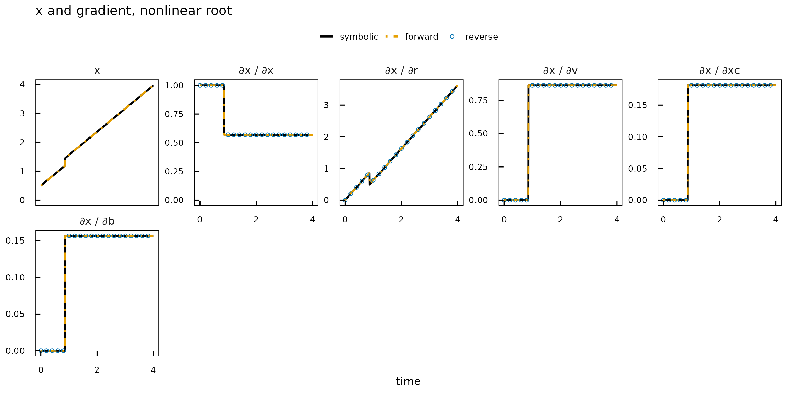
plot_quad_2 <- comparisonPlot(cmp_quad, 2L, "Second derivatives, nonlinear root",
rev_quad)
plot_quad_2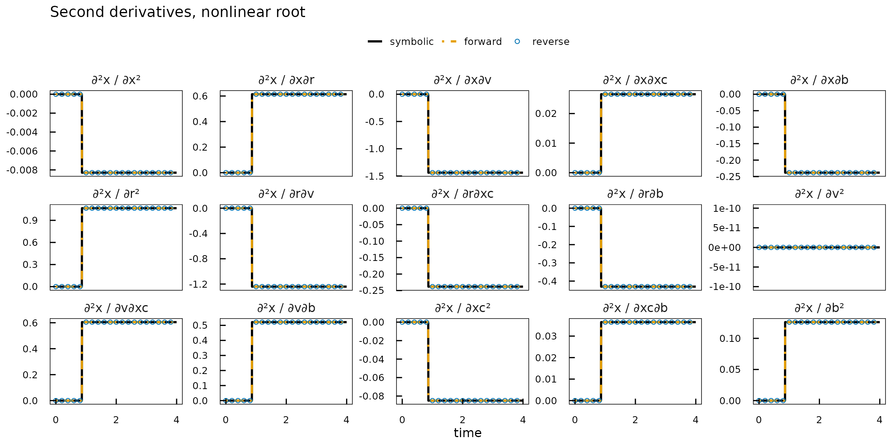
Crossing a state switch
Below \(x_c\) an inflow \(p < k x_c\) is added, so the solution crosses \(x = x_c\) once. The right-hand side jumps by \(p\); the switching time depends on \(x_0\), \(k\) and \(x_c\).
model_cross <- cppODE(c(x = "-k*x + p*(x < xc)"), deriv2 = TRUE,
modelname = "saltation_cross")
model_cross_r <- cppODE(c(x = "-k*x + p*(x < xc)"), derivMode = "forward-reverse",
modelname = "saltation_cross_r")
pars_cross <- c(x = 2, k = 0.5, p = 0.3, xc = 1)
times_cross <- seq(0, 8, len = 1000)
res_cross <- solveODE(model_cross, times_cross, pars_cross,
abstol = 1e-12, reltol = 1e-12, roottol = 1e-12)
pp <- sym("p")
point_cross <- point(list(x0, k, pp, xc), pars_cross[c("x", "k", "p", "xc")],
times_cross)
cross_before <- segment(xfun, -k * xfun(tSym), sp$Integer(0L), x0)
fire_cross <- crossing(cross_before - xc, point_cross)
cross_after <- segment(xfun, -k * xfun(tSym) + pp, fire_cross, xc)
x_cross <- composed(list(cross_before, cross_after), list(fire_cross))
cmp_cross <- comparison(x_cross, point_cross, res_cross, "x")
rev_cross <- reverseSeries(x_cross, point_cross, res_cross, model_cross_r,
pars_cross, "x", "x",
opts = list(abstol = 1e-12, reltol = 1e-12,
roottol = 1e-12))#> Warning: saltation/cross.rds was computed from other code or another cppDE
#> version; delete it to compute it again
report(cmp_cross, "a switch on a state, crossed")
#>
#> a switch on a state, crossed
#> state max |solveODE - symbolic| = 2.88e-12
#> first order max |solveODE - symbolic| = 2.93e-11
#> second order max |solveODE - symbolic| = 2.09e-10
plot_cross_1 <- comparisonPlot(cmp_cross, 0:1, "x and gradient across a switch",
rev_cross)
plot_cross_1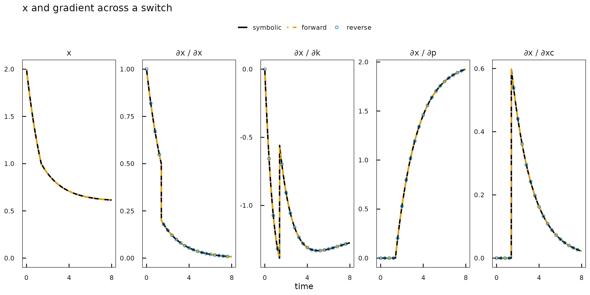
plot_cross_2 <- comparisonPlot(cmp_cross, 2L, "Second derivatives of x across a switch",
rev_cross)
plot_cross_2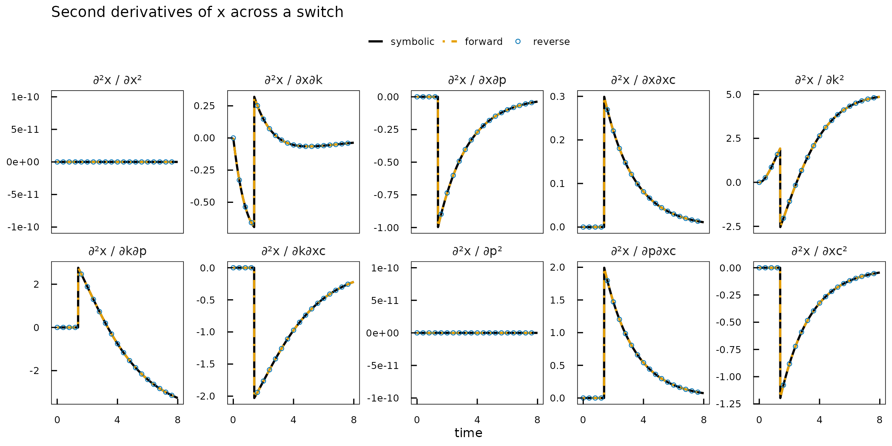
Sliding along a switching surface
The inflow is \(p\, e^{-rt}\). While it exceeds \(k x_c\) the solution slides on \(x = x_c\), with the sensitivities of \(x_c\) alone; after the exit they include the dependence of the exit time on \(p\), \(r\), \(k\) and \(x_c\).
model_slide <- cppODE(c(x = "-k*x + p*exp(-r*time)*(x < xc)"), deriv2 = TRUE,
modelname = "saltation_slide")
model_slide_r <- cppODE(c(x = "-k*x + p*exp(-r*time)*(x < xc)"),
derivMode = "forward-reverse",
modelname = "saltation_slide_r")
pars_slide <- c(x = 2, k = 1, p = 4, r = 0.3, xc = 1)
times_slide <- seq(0, 10, len = 1000)
res_slide <- solveODE(model_slide, times_slide, pars_slide,
abstol = 1e-12, reltol = 1e-12, roottol = 1e-12)
rs <- sym("r")
point_slide <- point(list(x0, k, pp, rs, xc),
pars_slide[c("x", "k", "p", "r", "xc")], times_slide)
slide_before <- segment(xfun, -k * xfun(tSym), sp$Integer(0L), x0)
slide_enter <- crossing(slide_before - xc, point_slide)
slide_exit <- crossing(pp * sp$exp(-rs * tSym) - k * xc, point_slide)
slide_after <- segment(xfun, -k * xfun(tSym) + pp * sp$exp(-rs * tSym),
slide_exit, xc)
x_slide <- composed(list(slide_before, xc, slide_after),
list(slide_enter, slide_exit))
cmp_slide <- comparison(x_slide, point_slide, res_slide, "x")
rev_slide <- reverseSeries(x_slide, point_slide, res_slide, model_slide_r,
pars_slide, "x", "x",
opts = list(abstol = 1e-12, reltol = 1e-12,
roottol = 1e-12))#> Warning: saltation/slide.rds was computed from other code or another cppDE
#> version; delete it to compute it again
report(cmp_slide, "sliding along a switching surface")
#>
#> sliding along a switching surface
#> state max |solveODE - symbolic| = 4.46e-12
#> first order max |solveODE - symbolic| = 4.83e-11
#> second order max |solveODE - symbolic| = 9.23e-10
plot_slide_1 <- comparisonPlot(cmp_slide, 0:1, "x and gradient, entering and leaving a slide",
rev_slide)
plot_slide_1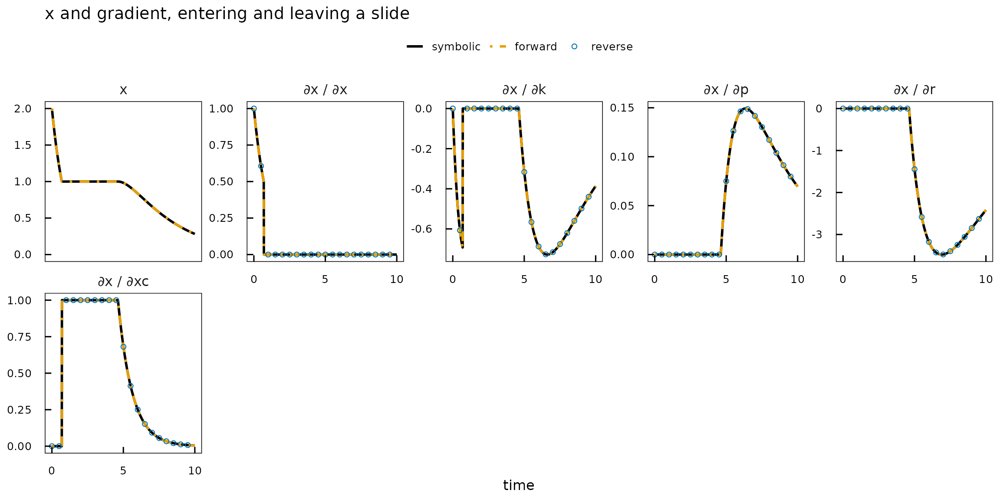
plot_slide_2 <- comparisonPlot(cmp_slide, 2L, "Second derivatives of x over a slide",
rev_slide)
plot_slide_2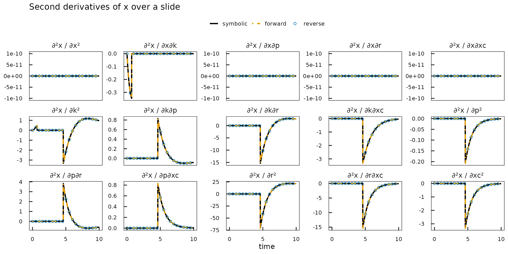